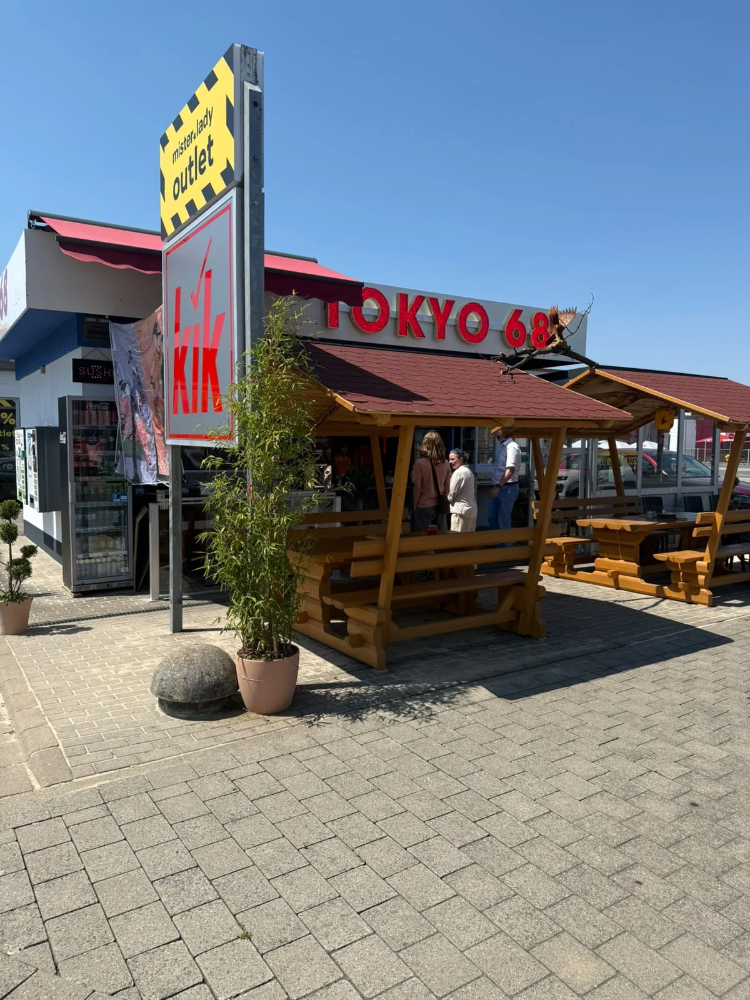
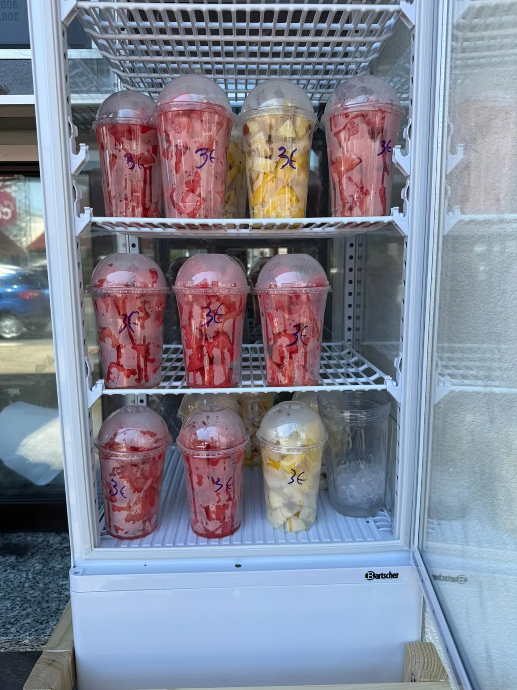
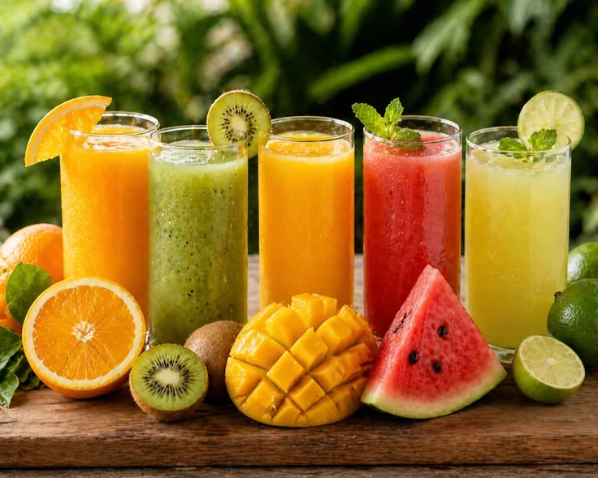
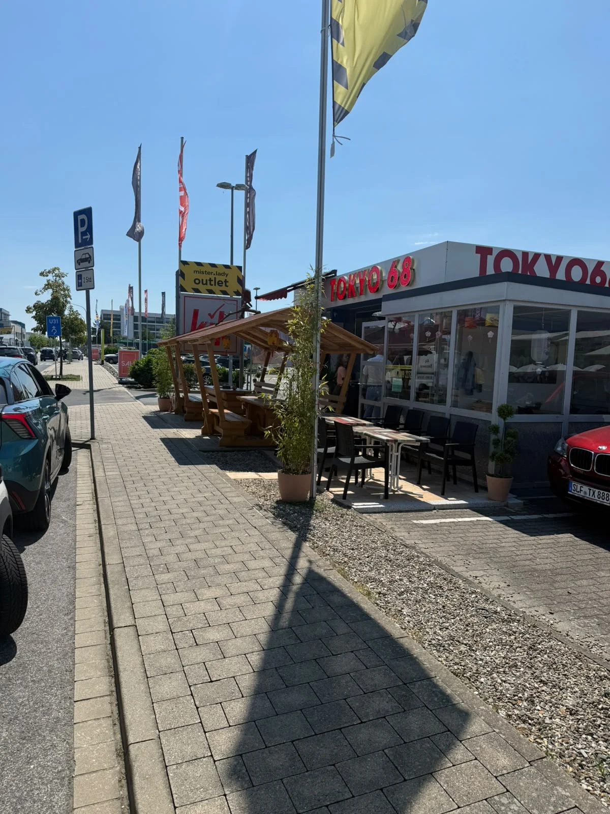
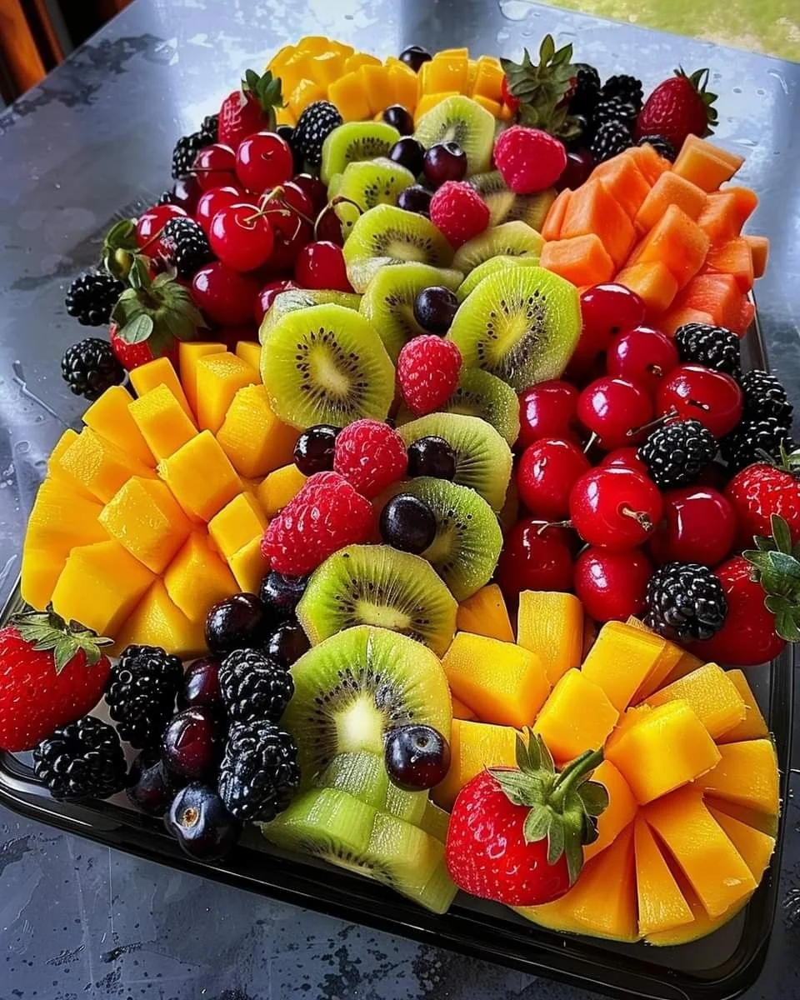
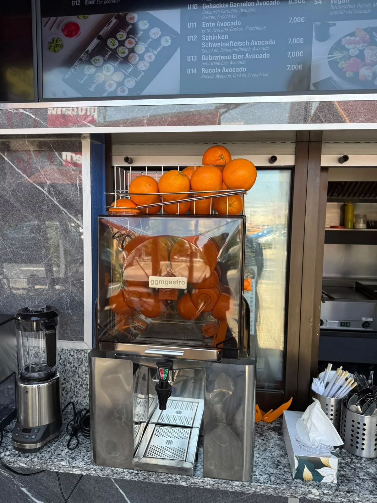

Asian Kitchen & Sushi · Mahlsdorf
Tokyo trifft Sen.
Asiatische Küche, Sushi-Handwerk und frische Fruchtideen — familiengeführt, ehrlich zubereitet und direkt online bestellbar.



in Berlin
Alles auf einen Blick
Beliebte Kategorien

Heute in Mahlsdorf
Frisch zubereitet.
Direkt für dich.
Wähle dein Gericht, passe Zutaten an und sende deine Bestellung in wenigen Schritten.
Jetzt bestellenFrisch, bunt und direkt
Fruit & Drink
Combo
Fruchtbecher, Säfte, Kaffee und alkoholfreie Getränke als frische Ergänzung zu Sushi, Curry und Wok-Gerichten.
Familienrezepte
Seit über 30 Jahren mit Erfahrung und persönlicher Handschrift.
Sushi-Handwerk
Mehr als 20 Jahre Präzision, Frische und sorgfältige Zubereitung.
Direkt bestellen
Optionen auswählen, Notiz ergänzen und Bestellung absenden.
Frisch vor Ort
Ob Sushi, Curry, Saft oder Fruchtbecher — frisch vorbereitet.
Willkommen bei Tokysen
Qualität trifft
Gastfreundschaft.

Tokysen Fresh
Fruchtplatten
& frische Cups
Bunte Früchte, sauber geschnitten und bereit zum Genießen. Frag uns nach verfügbaren Größen und individuellen Platten.
Tokysen Gefühl
“Ein Ort zum Ankommen, Genießen und Wohlfühlen — mit Gerichten, die Erfahrung und echte Handarbeit zeigen.”
Schnell ausgewählt
Deine Bestellung
in wenigen Schritten.

Kontakt & Abholung
Wir freuen uns
auf deinen Besuch.
- Adresse
- [ADRESSE]
- Telefon
- [TELEFON]
- Öffnungszeiten
- [ÖFFNUNGSZEITEN]